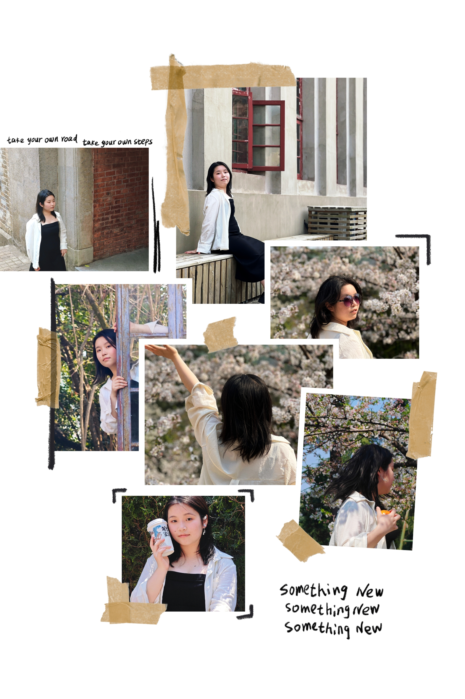
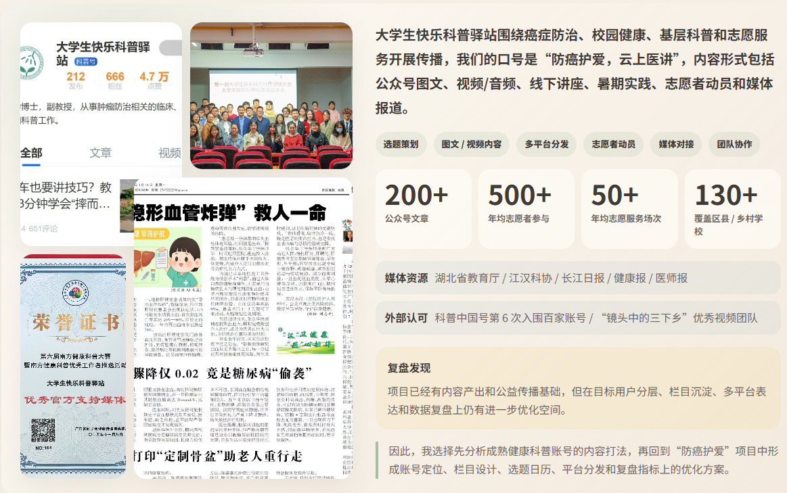
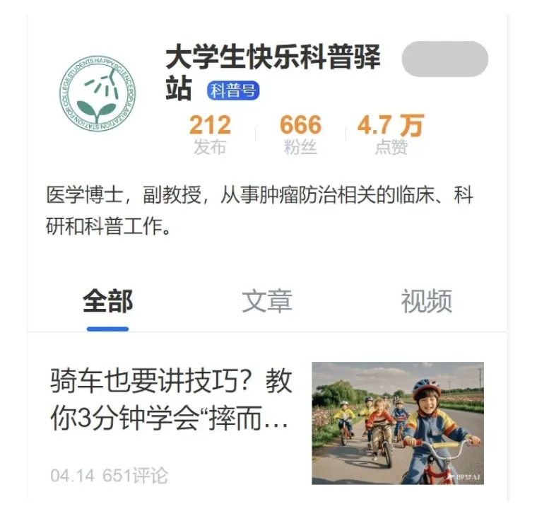
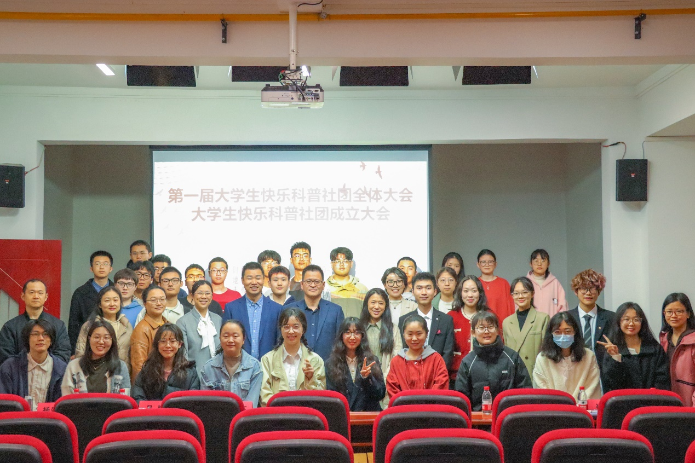
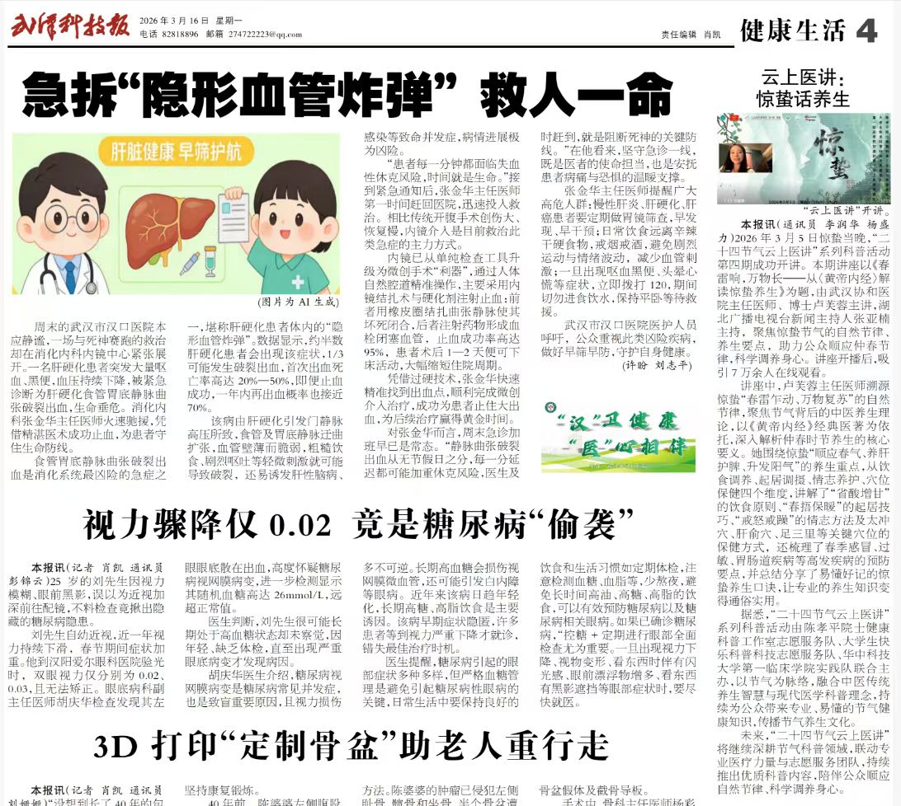
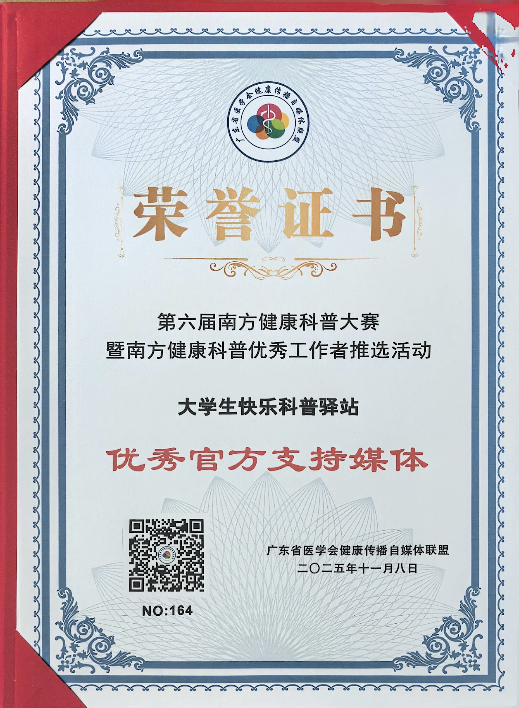
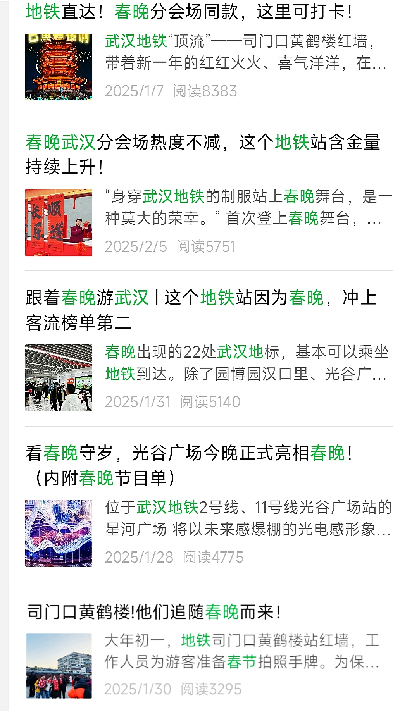
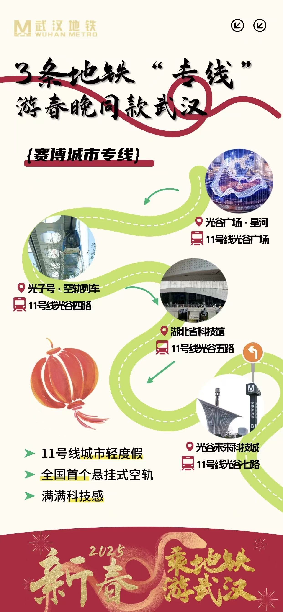

内容分析与复盘
对标账号分析 评论区需求提炼 AI 辅助样本整理
Portfolio 2026
信息与计算科学专业 2026届应届生
用项目作品展示我的问题拆解、内容分析与方案设计能力
通过 AI 工具整理个人知识库，复盘已有项目经历

本作品集围绕内容运营与项目复盘展开。
呈现真实项目中的信息整理、用户反馈分析、内容规律提炼和方案落地过程。以健康科普内容优化为核心案例，并补充活动策划、公益传播和 AI 工作流相关经历。
对标账号分析 评论区需求提炼 AI 辅助样本整理
200+ 公众号文章 多平台科普传播 媒体素材整理
5 个站点 5000 份物料 传播配合与现场执行
Featured Work
基于成熟健康科普账号对标分析，结合“防癌护爱”医学公益科普项目素材，梳理健康科普内容在账号定位、选题结构、标题表达、用户反馈和多平台分发上的优化方向。

背景 → 对标 → 洞察 → 诊断 → 方案
以“防癌护爱”医学公益科普项目为案例，确认真实项目基础与内容传播优化空间。
项目背景 / 当前问题选取 3 个成熟健康科普账号，分析其选题、标题、互动反馈与评论区需求。
账号类型 / 内容打法 / 用户问题对比不同账号的高互动内容，提炼健康科普内容的有效表达路径。
3 条跨账号洞察将对标发现回到“防癌护爱”项目，识别内容运营上的可优化空间。
5 个优化空间把问题转化为定位、栏目、选题、分发和复盘五个可执行动作。
账号优化路线图Project Starting Point
这份优化方案不是凭空设想，而是基于一个真实医学公益科普项目的内容复盘。




大学生快乐科普驿站围绕癌症防治、校园健康、基层科普和志愿服务开展传播，我们的口号是“防癌护爱，云上医讲”，内容形式包括公众号图文、视频/音频、线下讲座、暑期实践、志愿者动员和媒体报道。
媒体资源湖北省教育厅 / 江汉科协 / 长江日报 / 健康报 / 医师报
外部认可科普中国号第 6 次入围百家账号 / “镜头中的三下乡”优秀视频团队
因此，我选择先分析成熟健康科普账号的内容打法，再回到“防癌护爱”项目中形成账号定位、栏目设计、选题日历、平台分发和复盘指标上的优化方案。
Research Scope
我选取了 3 个成熟健康科普相关账号作为对标对象，并基于每个账号近 30 个帖子，分析其选题类型、标题表达、互动表现与评论区需求。
样本采集由 AI 工具辅助完成，结果沉淀为 Markdown 文件，便于后续复盘。
包含账号样本、标题类型、选题类型、互动数据与评论区问题整理。轻、短、具体、可收藏，把健康建议包装成生活清单。
生活方式 / 饮食选择 / 身体管理
数字清单 / 指南型 / 建议收藏
熬夜 tips、买菜指南、低卡饮品
更关心“怎么执行、适不适合我”
可借鉴点：清单结构 + 生活场景表达 + 收藏价值
用医生身份解释具体身体问题，同时接住用户焦虑。
女性健康 / 身体症状 / 妇科检查
问题反问 / 一条讲清 / 情绪表达
宫颈粘液、肩颈痛、体检隐私
反复问“我这样正常吗、要不要检查”
可借鉴点：去焦虑表达 + 女性友好视角 + 评论区反哺选题
用权威感、风险识别和行动建议，促成转发与收藏。
急救风险 / 体检避坑 / 癌症防治
风险预警 / 避坑提醒 / 行动指导
猝死提醒、体检避坑、危险信号
关心“严重吗、要不要就医、家人怎么办”
可借鉴点：风险分级 + 行动建议 + 家庭转发场景
账号数据以采集时主页展示为准；样本分析以近 30 个公开帖子为主，重点观察内容结构与用户反馈，不涉及医学诊断。
对比三个账号后，我发现健康科普内容的关键不只是“知识是否专业”，还包括用户是否能理解、是否愿意收藏、是否能获得下一步行动。
洞察 1
用户更愿意互动的，是能解决当下困惑的内容。
洞察 2
用户会在评论区直接说出真实需求。
因此，评论区高频问题可以作为后续选题库的重要来源，而不只是互动数据的补充。
洞察 3
内容逻辑：把知识变成清单
代表：百岁老人养生计划
适合：小红书收藏型内容内容逻辑：把问题讲清楚，把情绪接住
代表：覃医生不焦虑
适合：检查前准备 / 女性筛查内容逻辑：识别风险，给下一步动作
代表：医路向前巍子
适合：体检避坑 / 危险信号对照成熟账号的内容打法后，我将“防癌护爱”的内容问题归纳为 5 个可优化方向。
影响内容定位容易泛化
优化区分学生 / 基层群众 / 志愿者 / 媒体平台
影响优质经验难复用
优化沉淀固定栏目
影响不同平台用户习惯没有被充分利用
优化公众号 / 小红书 / 视频平台差异化表达
影响难以指导下一轮内容优化
优化增加标题 / 封面 / 评论区分析
影响真实需求难以反哺内容策划
优化建立选题库
基于项目诊断，我将内容优化拆成 5 个可执行动作：先明确定位，再设计栏目、规划选题、匹配平台，最后建立复盘指标。
方案学生与基层场景的医学公益科普矩阵
解决用户认知偏泛
动作学生 / 基层群众 / 志愿者 / 媒体平台分层
方案把零散选题沉淀为固定栏目
解决选题体系不稳定
动作节气健康 / 校园误区 / 癌症防治 / 志愿者故事 / 基层行动
方案按月规划公众号、小红书、视频平台内容
解决选题依赖临时灵感
动作4 周选题日历 / 月度主题 / 平台内容拆分
公众号小红书视频号
方案不同平台按用户习惯改写，而非复制粘贴
解决平台表达差异不足
动作公众号完整解释 / 小红书收藏卡片 / 视频平台短视频表达
完整解释 / 项目沉淀
场景建议 / 清单收藏
通俗讲解 / 活动记录
扩散动员 / 反馈收集
方案从阅读量扩展到评论问题、栏目表现和渠道效率
解决复盘维度较粗
动作阅读 / 收藏 / 转发 / 评论问题 / 栏目表现 / 渠道表现
Supporting Projects
除了核心作品，我也整理了几个能够支撑这份作品集的工具方法、项目素材和活动经历。
方法工具
为提高健康科普账号对标分析效率，我借助 OpenCLI、Codex 和 Obsidian 搭建了一套“一行命令触发”的小红书内容采集与知识沉淀流程。
项目素材
作为核心作品的真实项目来源，防癌护爱覆盖公众号、视频/音频、线下讲座、志愿者动员与媒体传播。更多内容已在核心作品区展开。
活动策划
围绕春晚热点设计地铁站点集邮打卡活动，提升线路曝光与到站参与，补充展示活动策划、现场执行和传播配合经验。



组织协作
对接地铁方服务需求，优化活动审核流程，并联系留学生群体策划“志愿服务 + 城市文化体验”活动，作为沟通协作和社群触达经历展示。
Working Style
相比直接给结论，我更习惯先理解场景，再整理信息、拆解问题、形成方案，并在执行后复盘结果。
先看问题发生在哪里，涉及哪些人，为什么当前流程不顺。
通过数据、样本、评论区、现场观察或用户反馈，找到真实问题。
把模糊问题拆成选题、流程、物料、渠道、工具或执行任务。
优先考虑当前资源下可以推进的方案，而不是追求复杂。
关注结果变化，并把经验沉淀为下一次可复用的方法。
More
华中科技大学
信息与计算科学｜本科
2022.09 - 2026.06
大学生创新创业训练计划
全国大学生数学建模大赛
校一等奖助学金
CET-6
Matlab / Python / Excel
公众号排版 / PDF作品集 / Obsidian
AI工具 / n8n / API / Prompt
方案撰写 / 资料整理 / 活动执行